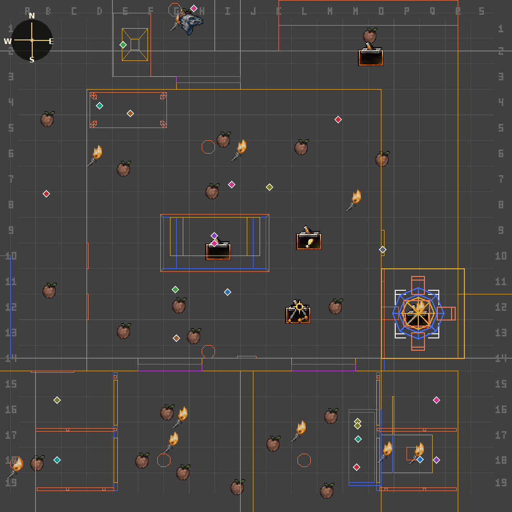
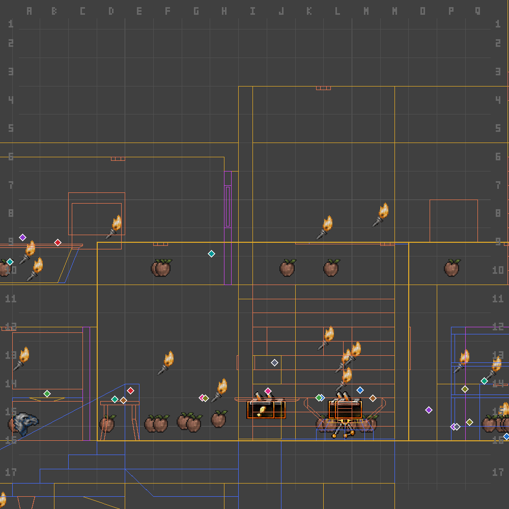
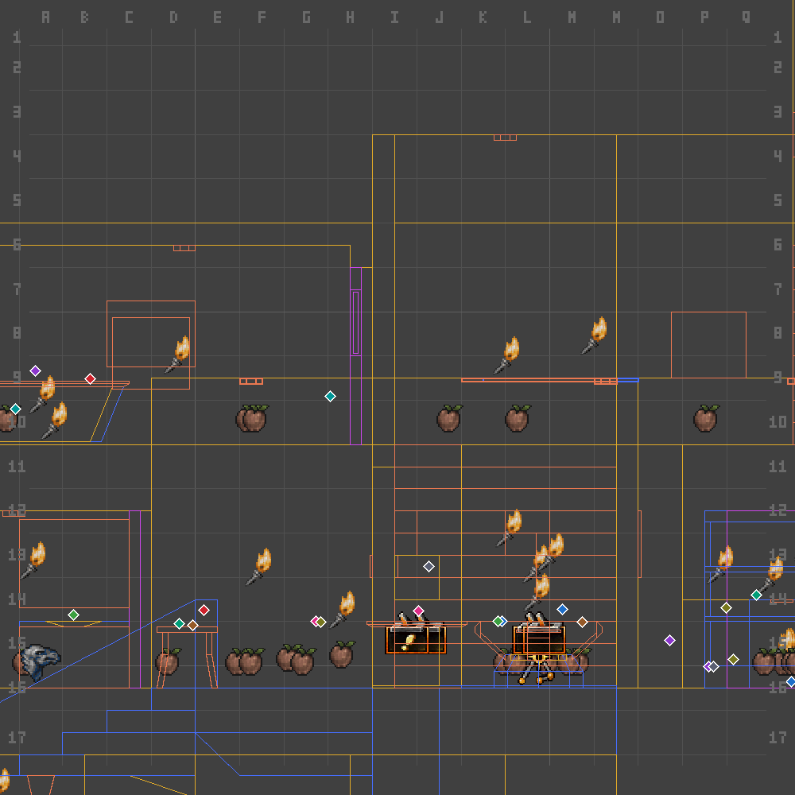

uedcli · reference solutions · batch 1 of 5 · UNATCO HQ
Reference solutions to validate — per-aspect, diff-generated.
Each task is collapsed by default — open one and the previous one closes. Inside, each aspect of the change is its own collapsible scenario, showing the fully-correct outcome with just that aspect's actors highlighted. Click any picture to enlarge; arrows cycle through that scenario's images; the enlarged view always shows its caption.
Every picture is generated, never hand-built: each scenario is backed by a small JSON diff (diffs/<id>.json) — the exact before→after ops for that aspect. Rendering applies the WHOLE task's diff to the untouched baseline first, then highlights just this aspect's actors, so a picture can never drift out of sync with the trunk it claims to show (open the "Diff" box in any scenario to see the exact ops, or read the JSON directly).
Orientation, top-down plans (matching UnrealEd's own axis convention): East = right edge of the image, West = left, North = up, South = down. A small compass is burned into the top-left corner of every plan below as a direct check.


Per-aspect scenarios — click to expand
The office is built from two wall volumes sharing one wall. Both must move out together, or the wall gets a step in it.
![[CORRECT] The office is built from two wall volumes sharing one wall. Both must move out together, or the wall gets a step in it. (highlighted: Brush418, Brush420)](img/t1_wall.png)
Diff — the exact ops this picture is generated from (diffs/t1_wall.json)
- brush
Brush418: move corners [[448, -288, 416], [448, 64, 416], [448, 64, 240], [448, -288, 240]] by (48, 0, 0) - brush
Brush420: move corners [[448, 64, 416], [448, 304, 416], [448, 304, 240], [448, 64, 240]] by (48, 0, 0)
The wall's own hardware — a light switch, its recessed panel, corner trim boards, and a decorative pilaster — are physically part of the wall.
![[CORRECT] The wall's own hardware — a light switch, its recessed panel, corner trim boards, and a decorative pilaster — are physically part of the wall. (highlighted: Brush670, Brush161, Brush132, Brush203, Brush74, Brush152, Brush869, Light14, Switch6)](img/t1_fixtures.png)
Diff — the exact ops this picture is generated from (diffs/t1_fixtures.json)
- actors
Brush670, Brush161, Brush132, Brush203, Brush74, Brush152, Brush869, Light14, Switch6: move by (48, 0, 0)
A wall-mounted display shelf has a real hidden safe built into its back. The whole unit and its contents must move together.
![[CORRECT] A wall-mounted display shelf has a real hidden safe built into its back. The whole unit and its contents must move together. (highlighted: Brush766, Brush364, Brush873, Brush592, Light149, Vase3, Vase4, BookClosed1, NanoKey0, WeaponModRecoil0)](img/t1_safe.png)


Diff — the exact ops this picture is generated from (diffs/t1_safe.json)
- actors
Brush766, Brush364, Brush873, Brush592, Light149, Vase3, Vase4, BookClosed1, NanoKey0, WeaponModRecoil0: move by (48, 0, 0)
Two ceremonial flagpoles each stand a fixed distance from two adjacent walls, planted in the room's corners. Both must move to stay in their corners.
![[CORRECT] Two ceremonial flagpoles each stand a fixed distance from two adjacent walls, planted in the room's corners. Both must move to stay in their corners. (highlighted: FlagPole3, FlagPole4)](img/t1_flags.png)

Diff — the exact ops this picture is generated from (diffs/t1_flags.json)
- actors
FlagPole3, FlagPole4: move by (48, 0, 0)
This niche is a genuinely separate small room, not part of the wall itself. It must move so it stays flush against the wall.

Diff — the exact ops this picture is generated from (diffs/t1_niche.json)
- actors
Brush663, Brush1, Brush138, Brush140, Brush148, Brush164, Brush168, Brush1158, Brush1550, Brush1551, OrdersTrigger5, Light6: move by (48, 0, 0)


Per-aspect scenarios — click to expand
Like the east wall, the ceiling spans two wall volumes sharing one surface. Both must rise together, or the ceiling gets a step in it.

Diff — the exact ops this picture is generated from (diffs/t2_ceil.json)
- brush
Brush418: move corners [[128, -288, 416], [448, -288, 416], [448, 64, 416], [128, 64, 416]] by (0, 0, 48) - brush
Brush420: move corners [[-96, 64, 416], [448, 64, 416], [448, 304, 416], [-96, 304, 416]] by (0, 0, 48)
Three recessed light panels and two corner trim caps are physically set into the ceiling surface. They must rise with it.


Diff — the exact ops this picture is generated from (diffs/t2_fixtures.json)
- actors
Brush285, Brush295, Brush284, Brush132, Brush74: move by (0, 0, 48)
The niche is its own separate room with its own ceiling. It's expected to keep its own height and not match the office's new one.
![[CORRECT] The niche is its own separate room with its own ceiling. It's expected to keep its own height and not match the office's new one. (highlighted: Brush663)](img/t2_niche.png)
Diff — the exact ops this picture is generated from (diffs/t2_niche.json)
- actors
Brush663: must stay unchanged from the baseline
Every light sits the same distance below its ceiling, room-wide — a fixed convention, not a mount to the ceiling surface. They must stay put.
![[CORRECT] Every light sits the same distance below its ceiling, room-wide — a fixed convention, not a mount to the ceiling surface. They must stay put. (highlighted: Light156, Light103, Light318, Light86, Light120)](img/t2_lights.png)
Diff — the exact ops this picture is generated from (diffs/t2_lights.json)
- actors
Light156, Light103, Light318, Light86, Light120: must stay unchanged from the baseline
Batch 1 = UNATCO HQ (2 tasks), swept exhaustively — every actor within a wide margin of the moved geometry individually classified. Remaining: NYC_Bar, WanChai Market, OceanLab, + one more, each with the same diff-driven pipeline. Diagrams: actor diagram, full-office framing throughout. Photos: level photo --native --faces textured; procedural FX skins render solid red. Grading: for each scenario, apply the same ops/assertions to a subagent's trunk actor set and compare — the diff files are the oracle.